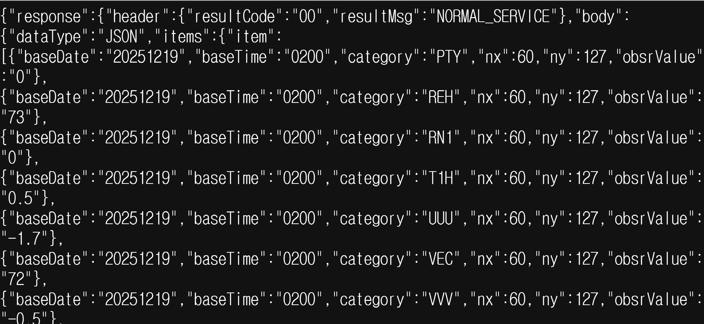
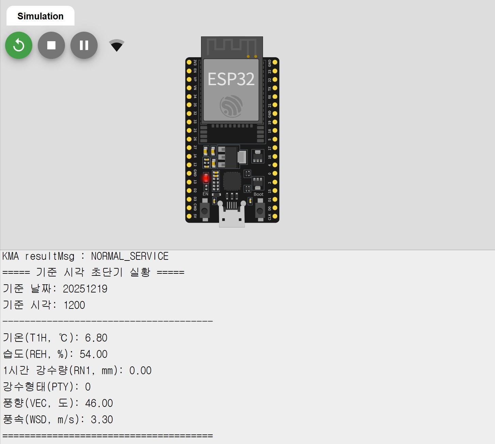
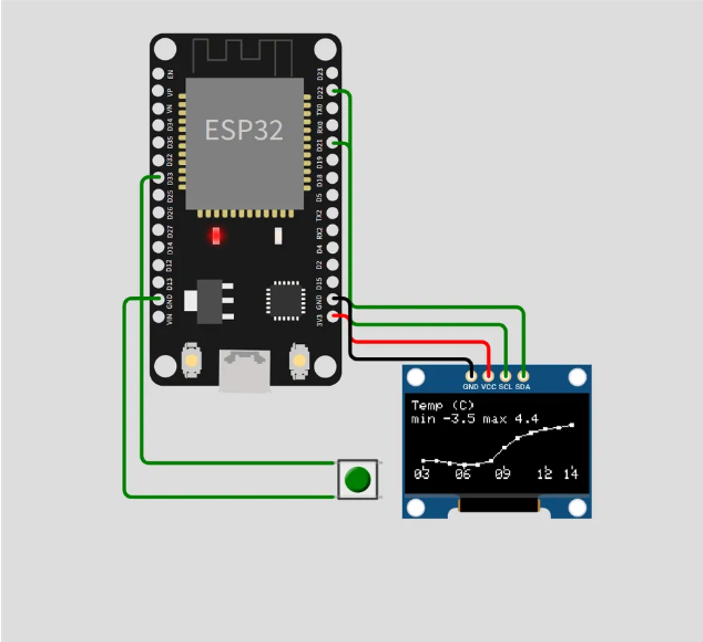

Weather Tracker IoT is a location-based smart weather monitoring system that retrieves real-time climate information from the Korea Meteorological Administration (KMA) API.
Summary:

This image shows the parsed XML response from the KMA weather API. I implemented the full data acquisition pipeline, extracting temperature, humidity, rainfall, and wind speed values and converting them into display-ready formats.

This figure demonstrates real-time weather data printed on the Wokwi Serial Monitor. I structured the serial output with clear labels and units to support efficient debugging and monitoring.

This image presents the OLED-based graphical visualization I implemented. Weather data is displayed as real-time graphs, enabling intuitive understanding of trends rather than raw numeric values.
System flow and tools used in this project.